China Minimum Wage 2026 for Foreign Employers: Payroll Risks, Cost Impact, and EOR Action Plan
Executive summary
- China does not use one national minimum wage number. Local governments set monthly and hourly floors, and the compliance burden sits at city/province level.
- Minimum wage updates influence more than entry salary. They can affect probation pay, absence pay calculations, overtime baselines, and dispute exposure.
- For EOR buyers, the question is not only “what is the latest number,” but “how quickly can payroll rules be updated across locations and employee categories.”
- A robust operating model combines legal monitoring, payroll simulation, employee communication, and contract amendment controls.
- The safest approach is to treat minimum wage updates as a recurring risk-control cycle, not a one-time HR data refresh.
The real issue: minimum wage is a systems problem, not a spreadsheet problem
Many overseas teams entering China assume minimum wage is a simple “table lookup” task. In reality, it is an operational systems issue because wage floors are set and implemented locally, and companies often run mixed work arrangements across cities. A team may hire in Shanghai, support operations in Hangzhou, and manage regional staff with different attendance patterns, allowance structures, and bonus cycles. If the organization only updates one payroll parameter, it can still end up non-compliant in edge scenarios.
This is where EOR execution quality matters. A capable EOR partner should not only track local notices but translate those notices into payroll rule updates, exception handling, and manager guidance. When this translation step is weak, companies usually discover the gap through employee complaints or arbitration preparation instead of routine controls. That is expensive, distracting, and avoidable.
What typically changes when local minimum wage standards move
In practice, local updates usually create at least four downstream effects. First, the obvious one: base salary floors for affected employee populations may need adjustment. Second, probation compensation can become non-compliant if internal offer templates rely on outdated minimum values. Third, when internal rules use wage-linked formulas (for specific leave/absence calculations), your expected payroll output can drift from legal expectations. Fourth, HR policy language may become stale if it references old legal baselines.
A common mistake is to update payroll but not update employee-facing policy documents, manager playbooks, and onboarding templates. That creates inconsistency in records, and inconsistency is exactly what weakens an employer’s position in disputes.
Scenario-led risk map (what foreign employers usually miss)
Scenario A: “We pay above market, so we should be safe”
This is often true for headline compensation but not always for every component. If a package uses lower base salary plus variable allowances, or if there are special arrangements during probation or temporary attendance fluctuations, the compliance test may focus on legal wage floor treatment rather than total package intent. Employers need to validate structure, not just total CTC.
Scenario B: “One policy for all China employees”
Operationally convenient, legally risky. The same policy language can produce different compliance outcomes across jurisdictions if local standards and enforcement emphasis differ. A better model is a national policy shell with local annexes and payroll rule mapping by city.
Scenario C: “EOR handles it, so internal team need not monitor”
EOR support reduces execution load, but buyer governance still matters. You should have visibility into update timing, impacted employee list, simulation output, and the final implementation record. Without those checkpoints, you are outsourcing work but also outsourcing awareness.
Action checklist: 30-day implementation cycle after any wage update
1. **Legal intake (Day 1-3):** capture local notice, effective date, affected categories, and interpretation notes.
2. **Employee mapping (Day 3-5):** identify all impacted employees by city, employment type, and compensation structure.
3. **Payroll simulation (Day 5-10):** run before/after outputs, including overtime-sensitive and leave-sensitive cases.
4. **Policy and template refresh (Day 7-12):** update offer templates, probation language, handbook references, and manager FAQs.
5. **Contract/notice process (Day 10-18):** issue required amendments or acknowledgments in bilingual format where needed.
6. **Implementation and QA (Day 18-25):** apply changes in payroll system, run sample checks, reconcile with EOR logs.
7. **Post-implementation audit (Day 25-30):** archive evidence pack (notice, mapping, simulation, approvals, communication artifacts).
This cycle is lightweight enough for monthly governance and strong enough to hold up in compliance reviews.
Building an EOR-focused control framework (beyond legal minimum)
If your goal is resilient scaling, minimum wage management should sit inside a broader EOR control framework. That framework typically includes: legal update monitoring SLA, payroll change management protocol, employee communication standard, and dispute-defense documentation. The best teams assign clear owners: legal/compliance interprets, payroll executes, HR communicates, and business leadership signs off on budget impact.
You should also track two practical metrics: (1) time from notice publication to payroll rule implementation, and (2) exception rate in impacted employee populations. These indicators quickly show whether your process is truly under control.
FAQ
Is there one official nationwide minimum wage number in China?
No. Minimum wage standards are issued by local governments, so employers must track where employees are located and how local rules apply.
If all employees are above local minimum wage, is no further action needed?
Not necessarily. You still need to confirm probation treatment, formula-linked calculations, and document consistency.
Can we rely on annual review only?
That is risky. Local changes may occur outside your internal annual cycle, so periodic monitoring is safer.
Does EOR eliminate this compliance risk?
EOR can significantly reduce execution risk, but the client should still enforce governance and evidence checks.
What records are most useful in dispute defense?
Update notices, employee impact mapping, simulation output, communication logs, signed acknowledgments, and payroll QA reports.
Should policy language mention minimum wage directly?
Only where needed. Many employers prefer referencing “applicable local legal standards” plus maintained annexes.
Disclaimer
This article is informational only and does not constitute legal advice.
Sources
- Ministry of Human Resources and Social Security (MOHRSS): http://www.mohrss.gov.cn/
- Local HRSS bureau notices and implementation announcements
- International Labour Organization country labor resources: https://www.ilo.org/
Need local employment support in China?
If you need a compliance-first Employer of Record (EOR) partner for hiring, payroll, and risk controls in China, China-Payroll.com can help your team evaluate the right setup.
Image Prompt Pack
Create a 16:9 hero image for article title: 'China Minimum Wage 2026 for Foreign Employers: Payroll Risks, Cost Impact, and EOR Action Plan'. Scene: HR compensation planning meeting with salary benchmark charts and city map pins across China. Include motifs: p…